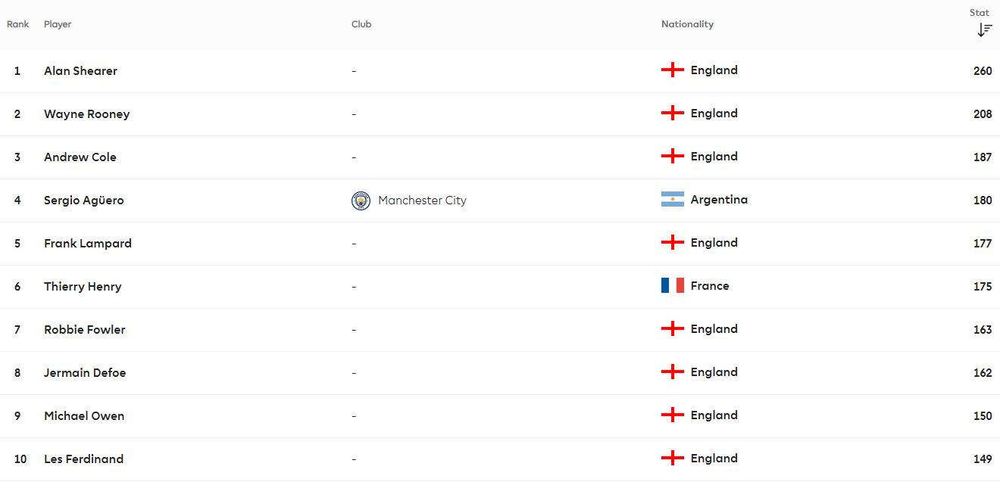

Throughout the premier league's history there have been a plethora of incredible goalscorers, from Manchester United's Wayne Rooney, Newcastle's Alan Shearer or even Arsenal's Thierry Henry. In the table below, the top 10 premier league goalscorers of all time are listed.

It comes as no surprise that Alan shearer and Wayne Rooney top the chart as they were both prolific goalscorers, Shearer in particular was one of the best goalscorers the world has ever seen. Moving down the list it is notable that Frank Lampard is among the top goalscorers considering he was a midfielder for Chelsea yet has still managed to score 177 goals.